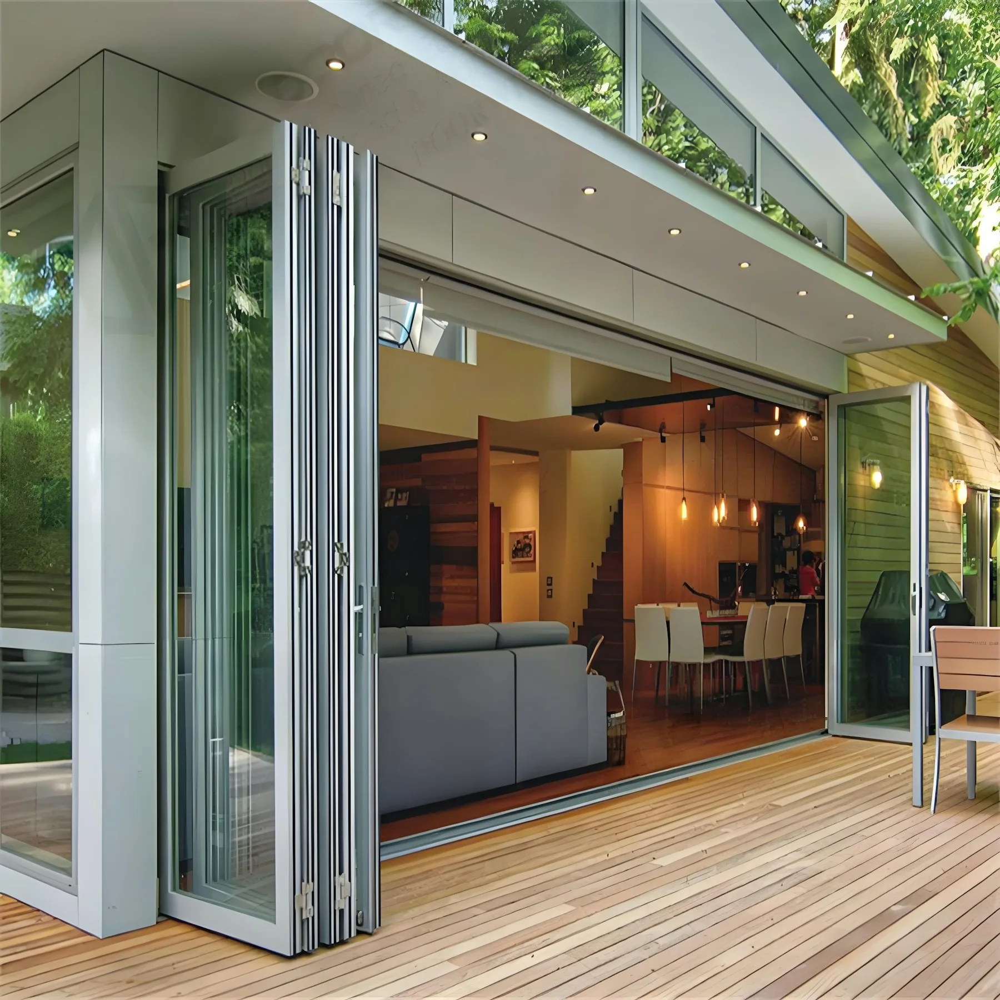
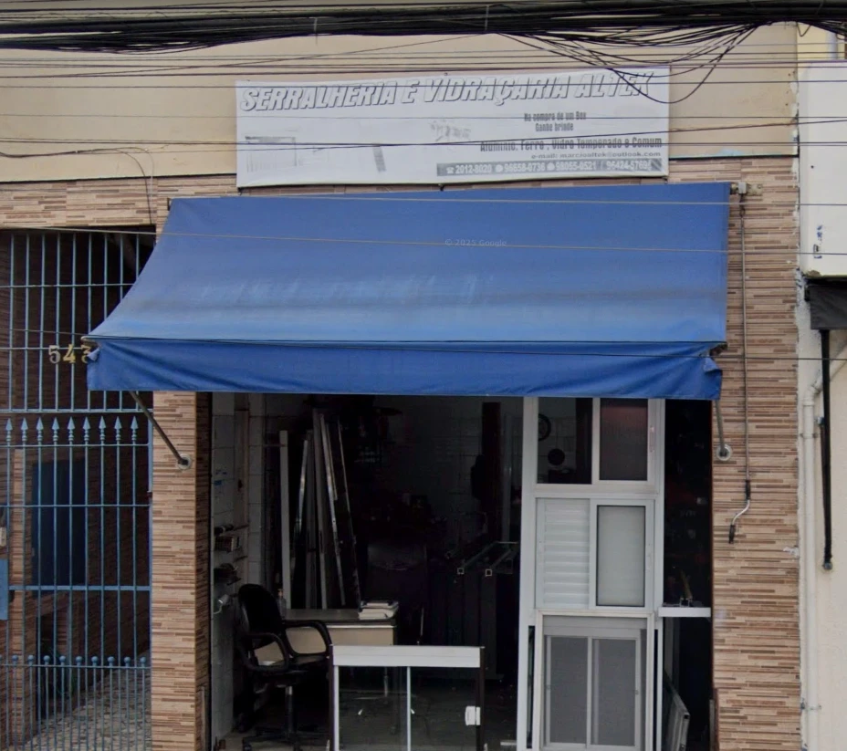

SERRALHERIA & VIDRAÇARIA · SÃO MATEUS
Vidro, alumínio
e soluções que transformam espaços.
Da ideia ao seu projeto, encontre soluções em vidraçaria e serralheria com a Altek, em São Mateus.
Loja física em São Mateus, SP

TRANSPARÊNCIA EM CADA DETALHE01 / SOLUÇÕES PARA O SEU PROJETO
Uma solução
para cada espaço.
Vidro, metal e acabamentos que fazem
parte de diferentes projetos.
Categorias sugeridas para esta apresentação. Consulte a Altek sobre disponibilidade e possibilidades.

02 / AQUI, NO BAIRRO
A Altek faz parte
de São Mateus.
Localizada na Zona Leste de São Paulo, a Altek é uma serralheria e vidraçaria com endereço físico em São Mateus. Um lugar para quem procura soluções em vidro e serralheria e prefere conversar diretamente sobre o que precisa.
Conheça a localização da loja ou entre em contato para solicitar informações.
03 / UM OLHAR PARA AS POSSIBILIDADES
Detalhes que fazem
a diferença.
Inspirações de aplicações em vidro
e metal para diferentes ambientes.
Imagens ilustrativas de aplicações e ambientes. Não representam trabalhos executados pela Altek.
VAMOS CONVERSAR?
Seu projeto começa
com uma conversa.
Conte o que você precisa e entre em contato
com a Altek pelo WhatsApp.
04 / VENHA CONHECER
Encontre a Altek
em São Mateus.
Confira a localização da loja e veja como chegar.
Cidade São Mateus
São Paulo — SP · CEP 03962-120